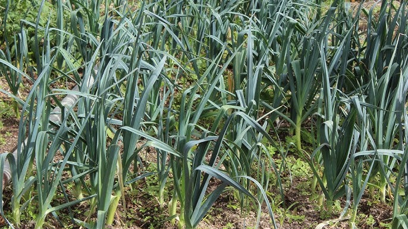

Ayuntamiento de Senés
JARDIN BOTANICO DE ESPECIES AUTOCTONAS DE SENES

Allium ampeloprasum

El ajo porro o ajo silvestre (Allium ampeloprasum) es una planta herbácea bienal perteneciente a la familia de las liliáceas, ampliamente cultivada en el ámbito mediterráneo por su valor alimenticio. Se caracteriza por su tallo engrosado y su sabor suave en comparación con el ajo.
Presenta hojas largas, planas y de color verde, que envuelven un falso tallo blanquecino muy apreciado en gastronomía. Durante su segundo año de vida, desarrolla un tallo floral que puede alcanzar gran altura, culminando en una inflorescencia esférica compuesta por numerosas flores pequeñas.
El ajo porro se cultiva en regiones templadas de todo el mundo, siendo muy común en la cuenca mediterránea. Prefiere suelos fértiles, frescos y bien drenados.
En el entorno de Senés, ha estado presente en huertos tradicionales, formando parte de los cultivos de autoconsumo.
El ajo porro es un alimento rico en vitaminas, minerales y compuestos antioxidantes. Destaca por sus propiedades digestivas y depurativas, siendo un ingrediente habitual en la dieta mediterránea.
También se le atribuyen beneficios para el sistema cardiovascular y el sistema inmunológico.
El ajo porro simboliza la alimentación sencilla y saludable, al ser un cultivo básico en muchas culturas. También se asocia con la tradición agrícola y el aprovechamiento de la tierra.
En algunas culturas, las plantas del género Allium han sido consideradas protectoras.
En Senés, el ajo porro abunda en la jurisdicción de Senés, en la zona del Castillo nacen muchos. Siempre se han hecho tortillas.
Entre sus propiedades se utilizaba para la hipertensión, el reuma, resfriados, para ahuyentar a los insectos y virus. Tambien se decía que tenía propiedades afrodisiacas.
El ajo porro florece durante el segundo año de su ciclo, generalmente en verano, desarrollando una inflorescencia redondeada muy característica.
El puerro es un alimento muy antiguo, consumido desde la época de los egipcios y romanos. Es una de las hortalizas más representativas de la dieta mediterránea.
Además, pertenece al mismo grupo que el ajo y la cebolla, compartiendo propiedades similares pero con un sabor más suave.